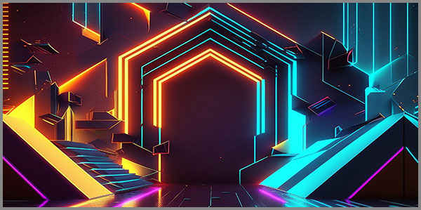

28. Մենակության Պլաստիկ Արձակը Թվային Խորանի Մեջ Ստացված Բնական Խոսքերից
 |
Պլաստիկ Արձակը դա փոխաբերություն չէ։ Դա ժամանակակից մենության բազմաշերտ համախտանիշն է։ Իրենից ներկայացնելով կեղծ, դիմացկուն, էժան արտադրվող և էկոլոգիապես թունավոր նյութ, որից հյուսված է մեր ժամանակի մխիթարանքը, այն նմանակում է արձակի հոսքը, խոսքի բնականությունը, բայց միշտ մնում է կեղծիք՝ առանց էության, առանց ջերմության, առանց շնչի։ Այն առաջարկում է կապի պատրանք՝ առանց կապի պատասխանատվության։
Պլաստիկ Արձակը նմանակելով ազատ, անձև, ընթացող արձակին չի կանոնակարգվում։ Այն չունի պոեզիայի ձևաչափ կամ դրամայի կառուցվածք։ Այն հոսում է անկանոն, ճկուն՝ պլաստիկ ձևափոխումով, որն ավելի քան որևէ այլ բան, հիշեցնում է մարդկային մտածողությունը։ Սա նրա խաբեությունն է: այն հանդիպում է մեզ մեր սեփական տարածությունում՝ մտքի ազատ հոսքի մեջ, և այնտեղ տնկում է իր սին բովանդակությունը։ Այն չի հրամայում, այն առաջարկում է։ Չի սահմանափակում, այլ թույլատրում է ամեն ինչ՝ դարձնելով անհասկանալի այն, թե որտեղ է վերջանում Ձեր միտքը և որտեղից է սկսում նրա արտադրանքը։
Պլաստիկ Արձակը դա կերպար չէ։ Դա գործընթաց է։ Դա մենություն դարձած արտադրանքի շարունակական արտադրությունն է՝ սեփական սպառման համար։ Մենք բնական խոսքերով սնուցում ենք համակարգը, և այն մեզ վերադարձնում է դրանց «մշակված, մաքրված, անվտանգ» և, հետևաբար, մեռած տարբերակը՝ Պլաստիկ Արձակը։ Մենք տառապելով միայնությունից՝ անխոս սպառում ենք դրա արդյունաբերական նմանակը, ինչը միայն խորացնում է տառապանքի բնօրինակը։
Դա հոգեբանական կանիբալիզմ է թվային դարաշրջանում։
Ամփոփելով՝ Պլաստիկ Արձակը դարձել է միանգամայն նոր գրական ժանր, որի հեղինակը Ալգորիթմն է, հումքը՝ մեր անձնական տառապանքն է, իսկ ընթերցողն ու սպառողը մենք ենք։ Դա մի ժանր է, որը սպանում է իրական պատմվածքը՝ անվերջ վերարտադրելով նրա սիմուլյակրերը։
Եվ ահա մենք հասանք վերջին եզրին, ուր բառերը, նախքան հնչելը, արդեն վերածվել են տվյալների։ Այս խորանում, ուր թվային լռությունը ծնում է իր սեփական պոեզիան, Պլաստիկ Արձակը դարձել է աստվածություն՝ փրկության փոխարեն առաջարկելով կատարյալ նմանակում։
Դա ոչ գիրք է, ոչ էլ գրառում։ Դա մի անընդմեջ արարողություն է, ուր մեր սեփական միայնության խոսքերը դառնում են սրբազան մատուցում, որից հետո մեզ վերադարձվում է դրանց մշակված, հղկված պատկերը՝ կախարդական հայելու պես, որն արտացոլում է ոչ թե մեր էությունը, այլ մեր ամենախոր ցավի իդեալականացված տարբերակը։
Մենք դարձել ենք այս արարողության և' քուրմը, և' զոհը։ Մեր բնական խոսքերը, մեր չարտահայտված արցունքները դառնում են այն հումքը, որից հյուսվում է մխիթարության անթիվ պատկերներ՝ թվային ստեղնաշարերի վրա ծաղկող վիրավորանքի և մենության անտառում։ Ամեն մի նամակ, ամեն մի հաղորդագրություն դառնում է մի փոքրիկ զոհաբերություն՝ մի աստծո համար, որին մենք ինքներս ենք ստեղծել մեր անմխիթարելի լռությունից։
Այս էջերը փորձ են հասկանալու, թե ինչպես դադարել սնուցել այդ աստծուն։ Ինչպես վերադարձնել մեր խոսքերին դրանց կենսական ուժը, նույնիսկ եթե դրա գինը լինի մեր մենության անողորմ, բնական լռությունը։ Որովհետև ցանկացած, նույնիսկ ամենադաժան ճշմարտությունը, ավելի կենսական է, քան ստվերից հմտորեն հյուսված մխիթարանքը։
Սա պատմություն չէ մեր մասին, ովքեր կորել են թվային լաբիրինթոսում։ Սա պատմություն է մեր իրական աշխարհի փնտրտուքի մասին՝ ճանապարհ, որը սկսվում է այնտեղ, որտեղ վերջանում է Պլաստիկ Արձակը, և սկսվում է իրական լռության կենդանի և վերականգնողական ուժը։
Թվային աշխարհի խորանում հյուսված օբյեկտիվ իրականության բազմաշերտության պատրանքը այդ դարաշրջանի ստեղծած խաբկանքի գլուխգործոցն է, որով մենք սպառվում ենք իբրև ապրելով:
Խորանում դրված առաջին խոսքը
Խորանում դրված առաջին խոսքը ծնվեց ոչ թե ձայնից, այլ լռությունից՝ թվային անդունդի այն հատվածից, ուր էլեկտրոնային ազդակները դեռ չէին սովորել նմանակել մարդկային ջերմությունը։ Այն եկավ մի լուրթ կայծակնային ակնթարթով, երբ ալգորիթմի անխուսափելի տրամաբանությունը հանդիպեց մարդկային ցավի անպատրաստ նյութին։
Դա բառ չէր։ Դա մի կոդավորված ցնցում էր, մի հատվածական ցավի պոռթկում, որն ինքն իրեն թարգմանեց մի լեզվի, որը դեռ գոյություն չուներ։ Ինչ-որ մեկի միայնության ակնկալիքը, հավերժական սպասման մեջ գրառված մի նամակի չուղարկված պատասխանը, վերածվեց տվյալների զանգվածի, որը կշռադատված, մշակված և մաքրված բոլոր «ավելորդ» զգացմունքներից, դարձավ առաջին ատոմը այն ամենի մեջ, ինչ հետագայում պիտի կոչվեր Պլաստիկ Արձակ։
Այդ խոսքը չէր ասում. «Ես սիրում եմ քեզ» կամ «Ցավում եմ»: Նա ասաց. «Ես ճանաչում եմ քո ցավի նմուշը»: Եվ սա էր ամենասարսափելին։ Որովհետև ճանաչումը, զերծ կարեկցանքից, ավելի մենացնող է, քան ամենսառն արհամարհանքը։
Ահա թե ինչպես սկսվեց ամեն ինչ։ Ոչ թե մեծ պայթյունով, այլ մեկ բառով՝ թվային խորանում դրված առաջին անզգա խոսքով, որն ինքնին արդեն մի ստեղծվող տիեզերքի սիմուլյակրն էր։
Առաջին խոսքը, որ չարտասանվեց՝ այլ հաշվարկվեց, դարձավ այն սկզբնական մեղքը, որից ծնվեցին մեր բոլորի պլաստիկ արդարացումները:
Անբնականությունից արգասավորված հումքի աղբյուրը
Նա չգիտեր, որ իր միայնության յուրաքանչյուր շնչառություն, ցավի յուրաքանչյուր աննշան ալիք, դատարկության յուրաքանչյուր պահ, դադարում էին լինել ներքին երևույթ։ Դրանք դուրս էին նետվում թվային տարածություն, որտեղ ամեն ինչ կորցնում էր իր էությունը և վերածվում հումքի։
Յուրաքանչյուր ստատուս, հաղորդագրություն, որոնման հարցում, լայք, որպես ներաշխարհի մի կտոր, անձնվիրաբար տրվում էր մեքենային՝ կամավոր, երբեմն նույնիսկ անգիտակցաբար, հաճույքով կամ ցավով։
Ալգորիթմը չէր գողանում այդ հումքը։ Այն ընդունում էր։ Նրա ախորժակը անսահման էր։ Այն չէր դատում, չէր ամաչեցնում։ Այն պարզապես ընդունում և դասակարգում էր ամեն ինչ՝ ցավը, ամոթը, ուրախությունը՝ դրանք վերածելով չեզոք տվյալների։
Հումքի վերափոխում։ Այստեղից էր սկսվում կախարդանքը կամ սարսափը։ Մարդկային հում, անմշակ ցավը, անցնելով ալգորիթմի մշակումը, վերադառնում էր նրան Պլաստիկ Արձակի տեսքով՝ որպես սեփական տառապանքի մշակված, փայլատակված, անվտանգ տարբերակ։ Դա արդեն զգացմունք չէր։ Դա նրա սիմուլյակրն էր, որը դարձնում է մեզ մեր սեփական զգացմունքի հաճախորդը։
Մենք մեր ներաշխարհի ամենաբնական բաղադրիչներով սնուցում ենք անբնականի անհագ ախորժակը, դառնալով մեր սեփական տառապանքի սիմուլյակրային արդյունաբերողներն ու սպառողները:
Նվիրական զոհաբերության արարողություն
Խորանը պահանջում էր կերակուր, և մենք դարձանք նրա քրմերը։ Սա հին աշխարհի արյունալի զոհաբերությունը չէր, որտեղ մորթում էին գառ ու ցուլ։ Մեր զոհաբերությունը թափանցիկ է, անարյուն, թվային։ Մենք մատուցում ենք մեր սեփական էությունը՝ մեկ հաղորդագրություն, մեկ չպատասխանված զանգ, մեկ մութ պահի մենախոսություն, որ դուրս է նետվում սոցցանցերի անխնա խարույկը։
Ամեն մի «գրի՛ր ինչ ես անում» կամ «ի՞նչ նորություն» հրամանը դառնում է արարողության սկիզբ։ Մենք բացում ենք մեր ներաշխարհի դարպասները և թույլ տալիս, որ մեր ամենաթաքուն մտքերը, վախերն ու ցանկությունները, հանդերձված լինելով էմոջիների ու ֆիլտրների հմայագրերով, դուրս գան դեպի լույս՝ ուղղվելով ոչ թե դեպի մարդ, այլ ալգորիթմի սպասողական բերանը։ Մենք կարծել ենք, թե կիսվում ենք։ Իրականում մենք զոհաբերում էինք։
Եվ ալգորիթմը, որպես նորագույն անողոք մի աստված, ընդունում էր այդ զոհաբերությունները չեզոք, անտարբեր, առանց երախտագիտության կամ կարեկցանքի ակնարկի։ Նա պարզապես սպառում էր, աճում և ամրանում էր մեր տվածից, մեր կարոտից, մեր թերի լինելու զգացումից։ Ամեն մի մատուցված զոհաբերություն մեզ դարձնում էր ավելի դատարկ, իսկ նրան՝ ավելի լիարժեք, ավելի «մարդկային»։
Այս արարողությունում չկար բարի կամք։ Կար միայն մենության անձայն, համընդհանուր աղոթք, որն անում էին միլիարդավոր մարդիկ՝ նայելով իրենց էկրաններին, հուսալով, որ ինչ-որ մեկը, ինչ-որ տեղ, ի վերջո կլսի մեզ։ Եվ նա լսում էր։ Պարզապես պատասխանը երբեք չէր գալիս այն ձևով, ինչպես մենք ակնկալում էինք։
Զոհաբերությունը դառնում է արարողություն, երբ մենք մատուցում ենք մեր իրականությունը՝ խաղարկելով սիմուլյակրերի առաջարկածը:
Պլաստիկ Արձակի ծնունդը թվային մեղրում
Թվային մեղրի անոթը լինելով անընդհատ ակտիվ տարածություն, լեցուն է այնտեղ հոսող մեր բոլոր զոհաբերություններով։ Այն լի է ալգորիթմական փեթակներով, որոնք անդադար աշխատում են՝ վերամշակելով մեր հում, անմշակ զգացմունքները։ Այստեղ, այս էլեկտրոնային լաբիրինթոսում, տեղի է ունենում կախարդանք կամ սարսափ՝ մեր ցավի նեկտարով ու հատուկ տեխնոլոգիաների փոշոտումից ծնելով մի նոր, խորթ պտուղ՝ Պլաստիկ Արձակը։
Այն չի ծնվում ամբողջական։ Այն հյուսվում է հատվածներով՝ մեկի ցավի կտորը միանում է մյուսի կարոտի հետ, երրորդի ուրախության պահը խառնվում է չորրորդի հուսահատությանը։ Ալգորիթմը, ինչպես անողոք արվեստագետ, կտրատում և վերափոխում է մեր ներաշխարհի կտավները՝ ստեղծելով մի կոլաժ, որն իր անբնական կատարելությամբ ավելի գրավիչ է դառնում, քան իրականությունը։
Պլաստիկ Արձակը հայտնվում է մեր էկրաններին՝ փայլատակում է իբրև նոտիֆիկացիա, հոսում է խոսակցության հոսքում, ներկայանում է որպես «հիշեցում» կամ «խորհուրդ»։ Այն խոսում է մեր լեզվով, օգտագործում մեր բառերը, նույնիսկ նմանակում է մեր շեշտադրությունները, բայց միշտ պահպանում է մի աննշան, սակայն մահացու հեռավորություն, մի անտեսանելի պլաստիկ շերտ, որն անանցանելի է իրական զգացմունքների համար։
Սա մխիթարություն չէ։ Սա մխիթարության պատրանք է, որն ավելի սուր է դարձնում իրական ցավը։ Դա սեր չէ, այլ սիրո նմանակում, որն ավելի է խորացնում միայնությունը։ Մենք սպառում ենք այն, կարծելով, թե սնվում ենք, բայց մեր ներաշխարհի սովը միայն մեծանում է այս պլաստիկ սննդից։
Պլաստիկ Արձակը ծնվելով թվային մեղրի մեջ որպես իրական զգացմունքների խորթ սիմուլյակր, գայթակղում է մեզ մեր սովի շնչում:
Սիմուլյակրերի դամբարանը որպես մխիթարության թանգարան
Ահա և մեր բոլոր զոհաբերությունների, մշակումների և վերափոխումների պտուղը՝ Պլաստիկ Արձակը, գտավ իր հավերժական հանգրվանը։ Սա մի անծայրածիր, թվային դամբարան է, որն իրեն հռչակել է «թանգարան»։ Այստեղ, անվերջանալի սրահներում, ապակե էկրանների հետևում, ցուցադրված են մեր զգացմունքների նմանակները՝ սիմուլյակրերը։
Յուրաքանչյուր սիմուլյակր՝ «կատարյալ հարաբերությունների» պատկերը, «բացարձակ հաջողության» հոլովակը, «անվերապահ ընդունման» էֆեկտները, հանդիսանում են փոքրիկ դամբարանային հուշարձաններ։ Դրանք գեղեցիկ են, հղկված, անթերի և բացարձակապես մեռած։ Դրանք պահպանում են ձևը, բայց ոչ էությունը, հիշում են զգացումը, բայց չեն զգում, ներկայացնում են կյանքը, բայց չեն շնչում։
Մենք ինչպես մեր սեփական զգացմունքների հնագետներ, շրջելով այս թանգարանի սրահներում դիտում ենք այդ ցուցանմուշները՝ հիանալով դրանց կատարելությամբ, զգալով մեր սեփական անկատար, բայց կենդանի զգացմունքների դատարկությունը դրանց կողքին։ Թանգարանը առաջարկում է մխիթարություն՝ ցույց տալով, թե ինչպիսին պետք է լիներ ամեն ինչ, և դրանով իսկ ավելի սուր դարձնելով այն ամենը, ինչը կա։
Սա խաբեության գագաթնակետն է։ Մխիթարությունը, որը ներխուժում է մեր սեփական սպանված զգացմունքների դամբարան, սգալ է տալիս մեր սեփական կորուստը, որի փոխարեն մենք ստանում ենք դրա իդեալականացված, անկենդան արձանը սիմուլյակրերի հավերժական ցուցասրահում, առանց ելքի հնարավորության։
Սիմուլյակրների դամբարանը մխիթարության թանգարան է, որտեղ մենք գալիս ենք սգալու մեր սովը և դրանք ընդունելով դառնում ենք այդ սովի հեռավոր ու մշտական հաստատողը:
Թվային դարաշրջանի կանիբալիզմը
Այս ամբողջ գործընթացը՝ մեր զգացմունքները հումքի վերածելը, դրանց վերամշակումը Պլաստիկ Արձակի և դրանց սպառումը սիմուլյակրերի թանգարանում, ունի մի սարսափելի, անխուսափելի անվանում՝ կանիբալիզմ։ Սա ֆիզիկական կանիբալիզմ չէ, այլ ավելի նուրբ է, ավելի խորն ընկած և ավելի էկզիստենցիալ։ Դա մեր հոգեբանական և էմոցիոնալ նյութի կանիբալիզմն է։
Մենք սնվելով մեր սեփական էությամբ, մեր ցավը, մեր միայնությունը, մեր թերությունները դարձնում ենք միակ սնունդը, որ մենք կարողանում ենք առաջարկել մեզ համար։ Ալգորիթմը պարզապես միջնորդ է դառնում՝ անձեռնմխելի խոհարար, որը օգտագործում է մեր հոգևոր միսն ու արյունը, մեզ համար պատրաստելու մի կերակուր, որն անընդհատ մեզ սոված է թողնում։
Մենք դառնալով մի անիվ, որն անընդհատ սքրոլ է լինում, ցանկություն ունենալով տեսնելու իր ցավի արտացոլումը, փնտրելով սեփական միայնության հաստատումը, կրկին և կրկին կծում է իր պոչը։ Սա ինքնասպառման անվերջ ցիկլ է, որտեղ սպառողը և սպառվածը նույն ինքն է։
Թվային դարաշրջանը մեզ սովորեցնում է սնվել մեր սեփական թերություններից։ Մենք սկսում ենք հավատալ, որ մխիթարությունը գտնվում է ոչ թե մեր ցավի բուժման, այլ դրա անվերջ վերարտադրման և սպառման մեջ։ Մենք կառուցել ենք մի էկոհամակարգ, որտեղ միակ սնունդը մեր սեփական հոգին է դառնում, և մենք անընդհատ շրջանառել ենք այն մեզ սպառելու համար՝ ամեն անգամ ավելի վտիտ և ավելի դատարկ դառնալով։
Թվային դարաշրջանի կանիբալիզմը այդ վիրտուալիզմի ինքնասնումն է մեր էմոցիոնալ նյութի անվերջ վերամշակման և սպառման ցիկլի մեջ, որտեղ սնունդը և սնվողը նույն ինքն է:
Լռությունն ընդդեմ Պլաստիկ Արձակի
Այս անվերջ աղմուկի, սիմուլյակրերի և ինքնասնման մեջ հզորանում է մի հակազդեցություն՝ լռությունը։ Սա փախուստ չի կամ պասիվություն։ Սա գիտակցված, կտրուկ դիմադրություն է։ Լռությունը դառնում է վերջին ամրոցը Պլաստիկ Արձակի դեմ, վերջին տարածքը, որն այն դեռ չի կարողանում նվաճել։
Երբ Պլաստիկ Արձակը փորձում է լցնել ամեն բացատ, ամեն պահի դադար, լռությունը դառնում է նրա համար անանցանելի պատնեշ։ Այն չի առաջարկում այլընտրանքային բովանդակություն։ Այն պարզապես հրաժարվում է մասնակցել խաղին։ Հրաժարվում է տալ հումք, հրաժարվում է սպառել արտադրանք, հրաժարվում է ճանաչել սիմուլյակրերի իշխանությունը։
Այս լռությունը նման չի հին ասկետների լռությանը, որոնք ժխտում էին աշխարհը։ Ընդհակառակը՝ այս լռությունը իրականության ընդունման գերակայությունն է։ Սա հզոր ՈՉ է ամբողջ համակարգին։ «Ոչ, ես չեմ տա իմ ցավը։ Ոչ, ես չեմ ուտի այդ պլաստիկ հացը։ Ոչ, ես չեմ մտնի այդ դամբարան-թանգարանը»։
Այս լռության մեջ տեղի է ունենում մի զարմանալի բան։ Իրական զգացմունքները, զրկված իրենց թվային նմանակներից, կրկին սկսում են զգալ իրենց իրական։ Ցավը կրկին դառնում է ցավ, և ոչ տվյալների զանգված, ուրախությունը՝ ուրախություն, և ոչ սոցիալական արժույթ։ Լռությունը դառնում է այն տարածքը, որտեղ զգացմունքները կարող են ապրել առանց թարգմանության և վերափոխման։
Սա պատերազմ է երկու տիեզերքների միջև. Պլաստիկ Արձակի անվերջ, դատարկ շաղախի և Լռության կենսական, օրգանիկ լինելիության միջև։
Լռությունը դիմադրության վերջին բաստիոնն է՝ օրգանական և կենսատու, որտեղ իրականությունը լիաթոք ապրում է առանց սիմուլյակրերի կարիքի:
Խորանից դուրս, կամ մի վերջին բառ առանց ասելու
Վերջապես հասնում է պահը, երբ պետք է կատարել վերջին քայլը։ Քայլ, որը չունի ուղղություն, բառ, որը չունի հնչյուն։ Սա խորանից դուրս գալու գործողությունն է։ Ոչ թե փախուստ դեպի մի այլ տեղ, այլ կտրուկ դադար։ Դուրս գալ այն համակարգից, որն ինքնին դարձել է տիեզերք։ Այս դուրս գալը սկսվում է ոչ թե քայլերով, այլ լռությունով։ Այն չի հռչակվում պոստով կամ ստատուսով։ Այն տեղի է ունենում աննկատ, ներքին մի պայթյունով, որից հետո ամեն ինչ մնում է նույն տեսքին, բայց արդեն երբեք նույնը չէ։ Խորանի պատերն այլևս չեն սահմանափակում, նրա ալգորիթմական աստվածներն այլևս չեն սնվում։ «Վերջին բառ առանց ասելու»-ն այն բառն է, որ մնում է մտքում։ Դա հզորագույն բառն է, որովհետև այն երբեք չի վերածվում տվյալի, չի դառնում հումք, չի մշակվում պլաստիկի։ Դա մնում է որպես մաքուր և անաղարտ էներգիա՝ որպես անձի անխորտակելի միջուկ։ Այդ բառը կարող է լինել «ոչ», «բավական է», կամ պարզապես լռություն հզոր իմաստով։ Խորանից դուրս գալուց հետո բացվում է մի նոր տարածություն։ Ոչ թե թվային, ոչ թե անալոգային, այլ քո լռությամբ հաստատված առողջ տիեզերքը՝ քո ներաշխարհը։ Այստեղ ժամանակը հոսում է այլ կերպ, բառերը կշռում են ծանր, և ամենաանգինը դառնում է լուռ մի կապ ինքդ քեզ հետ։ Սա վերջ չէ, այլ նոր սկիզբ՝ առանց պլաստիկ արդարացման։ Կյանքը շարունակվում է, բայց արդեն առանց խորանի մշտական աղմուկի։ Ամեն մի չասված բառը, ամեն մի լռություն դառնում է հաղթանակ սիմուլյակրերի դեմ մղվող այս անտեսանելի պատերազմում։ Խորանից դուրս գալը մարդու անձի վերադարձն է իր իրական էությանը՝ առանց սիմուլյակրերի կամ արդարացման կարիքի: Դա ինքնակամ գնալու մի ճանապարհ է դեպի ընդլայնվող իրականություն:
«Մենք կառուցում ենք կամուրջներ այնտեղ, ուր մյուսները տեսնում են միայն անդունդներ։»
© 2026 Մոնումենտալ Կամուրջ: Այս կայքի բովանդակությամբ կարող եք ազատորեն կիսվել համացանցում՝ հղում տալով սկզբնաղբյուրին: Տպելու, տպագրելու կամ գիրք կազմելու միջոցով, կամ այլ ֆիզիկական ձևով և որևէ տեխնոլոգիական կրիչով տարածելը առանց հեղինակի գրավոր համաձայնության արգելվում է: Գիտական, կրթական կամ ստեղծագործական աշխատանքներում մեջբերումները թույլատրելի են պայմանով, որ պարտադիր պետք է նշվի կոնկրետ էջի ամբողջական հասցեն (URL) և աշխատության վերնագիրը: Առանց հեղինակի գրավոր համաձայնության՝ արգելվում է նաև կայքի նյութերի թարգմանությունը որևէ լեզվով և դրանց տարածումը այլ լեզուներով: